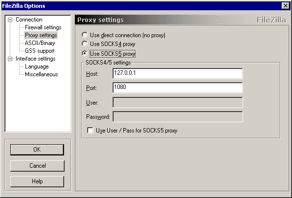

Proxy settings
Overview
In addition to the Firewall support, FileZilla also supports SOCKS4 and SOCKS5 based proxy servers. Setting up the proxy server is very similar to the firewall settings.

| Proxy type | - | FileZilla supports SOCKS4 and SOCKS5 proxies. Please select the appropriate proxy type. If your proxy supports both SOCKS4 and SOCKS5, select SOCKS5 |
| Host | - | The address of the proxy |
| Port | - | The port of the proxy |
| User | - | The username used to logon to the proxy. Note that only SOCKS5 servers support logon. |
| Pass | - | The password used to logon to the proxy. Note that only SOCKS5 servers support logon. |
| Use User / Pass for SOCKS5 proxy |
- | When you use a SOCKS5 proxy, the proxy may require you to logon. Activate this checkbox and enter your username and password into the appropriate fields. |
Contact your system administrator if you don't know the required information or if you have problems connecting through the SOCKS proxy.